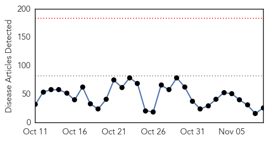
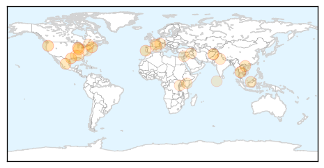
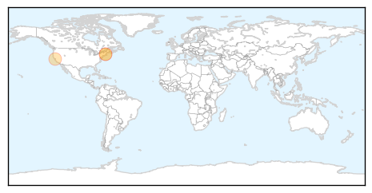
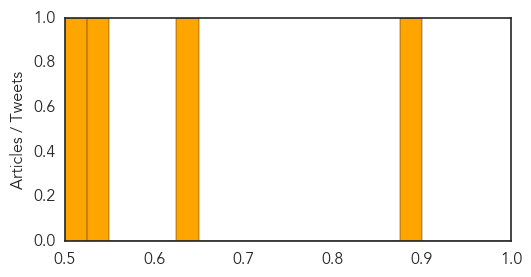

Unknown
30-Day Web Trend
0 alerts, 0 warnings

30-Day Twitter Trend
0 alerts, 0 warnings

Article Locations
Article Confidences

Top Articles:
- 0.941
- Dangerous bacteria spreads beyond hospitals; C. diff often acquired in community by low-risk patients
- 0.917
- Chicago Tribune
- 0.917
- Chicago Tribune
- 0.910
- The world windows to Thailand
- 0.904
- 'Kissing Bug' Now Spreading Tropical Disease in U.S.
- 0.891
- 'Kissing bug' disease infected OVER 300,000 people in the US
- 0.866
- The cockpit of the solar-powered Solar Impulse 2 aircraft is pictured after a training flight at its base in Payerne
- 0.788
- Legionella outbreak in Lisbon area lands 90 in hospital, kills 1
- 0.763
- ‘Kissing bug’ disease infects OVER 300,000 people in the US
- 0.739
- Indiana health officials outline current efforts to monitor travelers from Ebola outbreak
- 0.736
- SGGP English Edition- 70 percent of cancer patients in country detected late
- 0.663
- Need to spread Ayurveda all over the world: Health experts
- 0.652
- Make health a social movement: Harsh Vardhan
- 0.638
- 2,000 deaths later: Probe committee visits Allied’s paediatric ward
- 0.620
- Make health a social movement
- 0.560
- Kenyan Bishops Accuse WHO and UNICEF of Implementing a "Population Control" Program
- 0.541
- Two detainees held in North Korea arrive back in US
- 0.541
- Heavy artillery fire in eastern Ukraine’s Donetsk
- 0.541
- Protests over fatal police shooting of young Arab-Israeli
- 0.541
- Iraqi army in push to oust IS militants from main oil hub
- 0.541
- Ex-PM Fillon to sue Le Monde over Sarkozy claims
- 0.541
- Protesters clash with police over killing of French activist
- 0.541
- Term’s up for many African leaders, but will they go?
- 0.530
- Alberta appeals to private wholesalers for flu-shot distribution
- 0.506
- Health experts find need to spread Ayurveda all over the world
- 0.502
- Transferring Liver Patients May Do More Harm Than Good
Top Tweets:
-
No tweets found for Nov 09, 2014
Hepatitis
30-Day Web Trend
0 alerts, 0 warnings

30-Day Twitter Trend
0 alerts, 0 warnings
Article Locations
Article Confidences
Top Articles:
- 0.895
- Scientists See Success in First Human Trial of Hepatitis C Vaccine
- 0.633
- The Real-World Experience With Simeprevir- and Sofosbuvir-Based Regimens in Hep C Treatment
- 0.535
- Merck four-week hep C regimen with Gilead's Sovaldi comes up short
- 0.521
- Merck 4-week hep C regimen with Gilead's Sovaldi comes up short
Top Tweets:
-
No tweets found for Nov 09, 2014